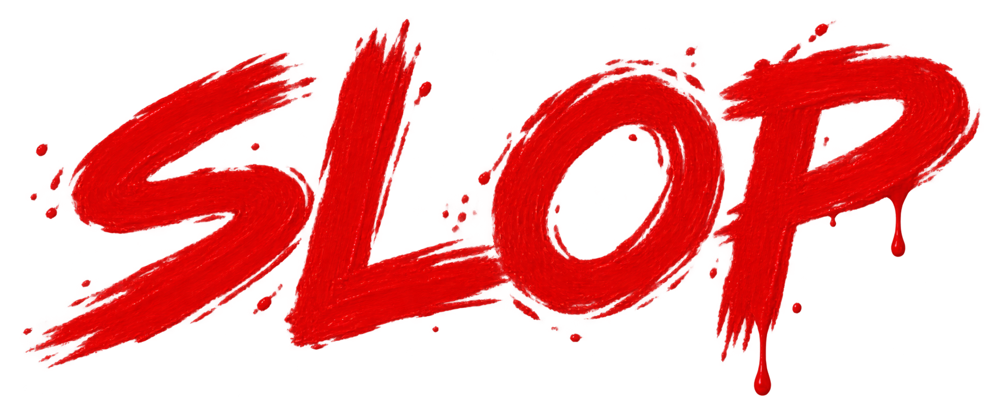

LICENSE TO MAKE A MESS.
GOLDENEYE
64THE GAMESLOP EXPERIMENT
Our mascot. A black tux. A whole new cast.
Familiar faces on patrol. Meme scientists in the lab.
16 enemy faces · 4 meme scientists · Mouse + keyboard
Mouse + keyboard.
Click the game or Mouse aim to capture the cursor.
Move the mouse to aim. Left-click fires; right-click holds the sights.
W A S D move / strafe. R reloads; X changes weapons.
Esc releases the mouse. Enter opens the watch / Start.
In menus, use W A S D and X to confirm. With the mouse released, the original keyboard controls still work: Space fires, Z reloads, E aims.
Pick your setup.
Adjust mouse sensitivity in the game toolbar. A controller works too; release the mouse first to use your usual control layout.
Save and load states from the emulator toolbar. Regular mission progress is kept in this browser.
The first mission can take a little time to load. A brief black screen before its intro is normal.